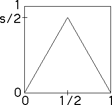

| The Tent Map is one of the
simplest nonlinear functions. It consists of two linear functions: |
| T(x) = s⋅x |
for x ≤ 1/2 |
| T(x) = s⋅(1-x) |
for x ≥ 1/2 |
|
| For small x, the Tent Map represents growth; for larger x decline,
perhaps an effect of competition for limited resources. |
|  |
| Note the maximum value occurs at x = 1/2, and that
maximum value is s/2. |
| We shall see the graph should
stay inside the unit square. Consequently, we restrict the number s to the range |
| 0 ≤ s ≤ 2. |
| We shall see that as
s varies, the structure of the orbit x0, x1 = T(x0),
x2 = T(x1), ... varies in a very complicated way, but not as
complicated as that of the logistic map. |
| Nevertheless, the iterates of the tent map exhibit rich behavior, including chaos. |